What? I actually got around to doing this? It's been four- almost five months!
Yes, yes, I'm late. Very late, in fact. But alas, I'm a phenomenal procrastinator and just didn't really want to work on it. I did in fact resume working on it again back in March, and then procrastinated it once more until now. Todd's departure has given me a plausible and utterly immovable deadline, one that cannot be changed and is within my completionary power. I also decided that I was going to make just the charts and graphs I felt like making - nobody's paying me to do this, so I get to make the rules. Oh, also, if anyone wants the raw data, boy do I have plenty of raw data for you. Ask me for it. Please, I dare you.
For those of you who were not here or have not spent as much time in the last few days as I have mulling over the raffle, here's a quick recap of how it went. Every person who worked any shifts in the prior six months received between 1 and 6 tickets, depending on how much they worked. For example, the fine gentleman and Polo Aficionado Clay who is here 5+ days a week received 6 tickets. I received 3. The more hours in a 6 month period over the course of 2020, the more tickets. There were then twenty boxes placed in the dining room with pictures and labels of possible prizes. You would write your name on your tickets and put them in whatever box you hoped to win. On Wednesday, December 23rd, Tari and Ryan drew a name from those boxes to receive the prize. Afterwards, I was given access to the boxes and wrote down who put tickets in which boxes and how many, for the purpose of statistical analysis. For the sake of anonymity, I'm not going to be disclosing who put what where, as that seems impolite.
Oh, also, as you're reading through this if you feel (as I do) the urge to check things against the tables here, just give it a minute. There's a decent chance I've included it in a fun facts section at the bottom of the page, and it'll save you some effort.
The chart below shows, in bar format, the number of tickets each prize 1-20 received.
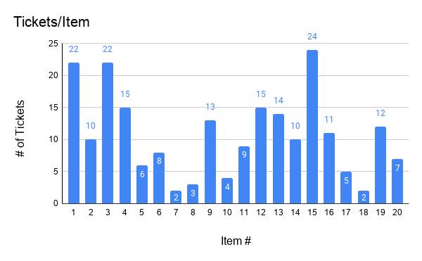 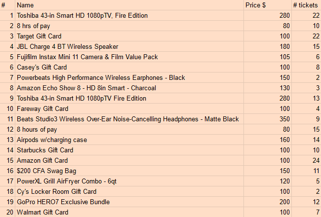This table is by Item # and includes Name, Price and # of Tickets.
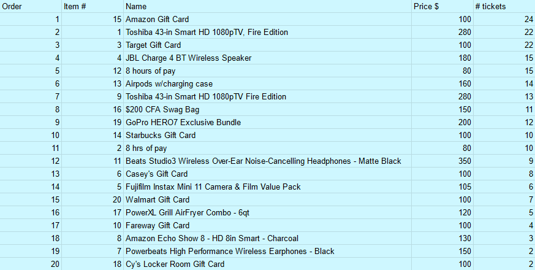This table is in order of most tickets per item. For convenience!

The total tickets each table received is shown above. Table 1 was the leftmost, closest to the playplace, and Table 4 was rightmost, closest to the counter. Items 1-5 were on Table 1, 6-10 on Table 2, and so on. You'll notice that Tables 2 and 4 both received significantly fewer tickets than 1 or 3. I wonder why that might be?
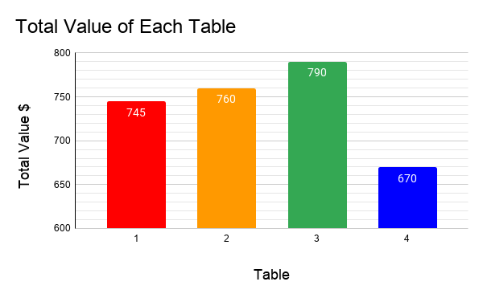The plot thickens. From this chart you can see that the total value of Table 2 (Price of items 6-10 added up) is actually greater than the total value of Table 1! This just goes to show that $ value isn't necessarily the most sought-after characteristic, which we'll see more of later.
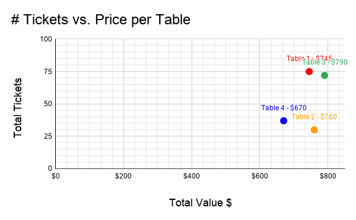Here you can see that there's not that great of a correlation between Value of Table and # of Tickets received. The correlation coefficient r (magic number where 1=correlated and 0=not correlated) is 0.4817, which is not insignificant. Then again, I do only have four data points. I love scatterplots.
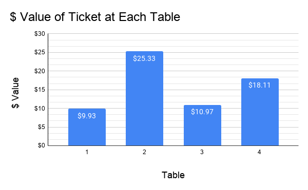Here's one more chart I made because I could. If you put a ticket in a box on Table 2, it was worth approximately $25.33, whereas on Table 1 it would only be worth $9.93.
The correlation between # of Tickets and Price an item received isn't really there. Correlation coefficient for this line-of-best-fit is 0.1949, which means there's not much correlation.
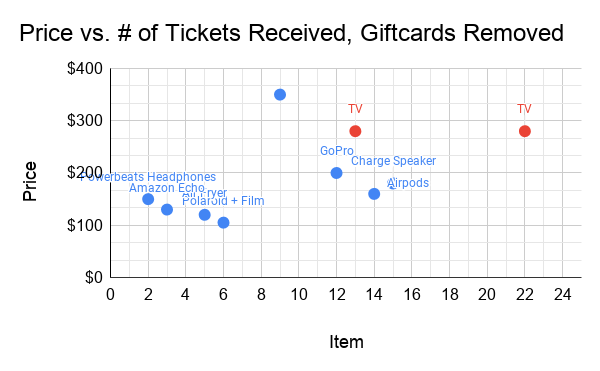I thought to myself, well, the gift cards are quite popular, so I wonder what the graph looks like if you take them out. It looks like this. Correlation coefficient is 0.5357. This is significantly higher and much closer to a legitimate correlation. Also note the two TVs highlighted in red - they received vastly different #s of tickets despite being the same item. My guess as to why this would be is that the TV with more tickets was the first item on Table 1, where more people are likely to see it and see it first. The other TV was fourth on Table 2.
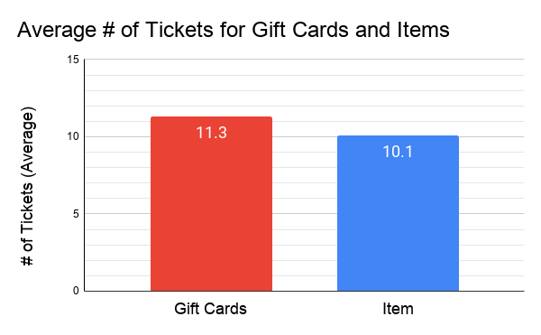Because I'm on the subject of splitting by Gift Card vs. Item, here's a graph showing the # of Tickets received for the average Gift Card and Item. There are exactly 10 items and 10 gift cards (the two 8 hour pay certificates count as gift cards), but the Gift Cards have a slight edge.
Because I had all these numbers, it seemed like a shame for me not to look at the distribution of tickets. You can see it's positively skewed, meaning most people received between 1 and 3 tickets, with fewer getting higher numbers. That's what one would expect, given that we have only a few full time employees and relatively many part- and half-time employees.

Time to begin more categorization! Here I broke the Percentage of Tickets graph into FOH and BOH. You can see that the FOH spread has a strong positive skew and and the BOH is more normally distributed, even showing a slight negative skew.
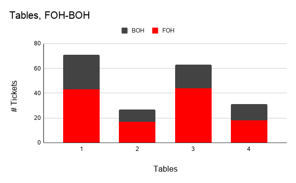 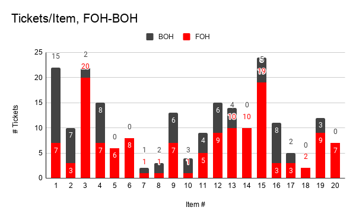Here's two more FOH-BOH split charts - the first is neat and also serves to illustrate that the FOH had more tickets overall than the BOH. The second lets you see which tables were preferred by which half of the restaurant.
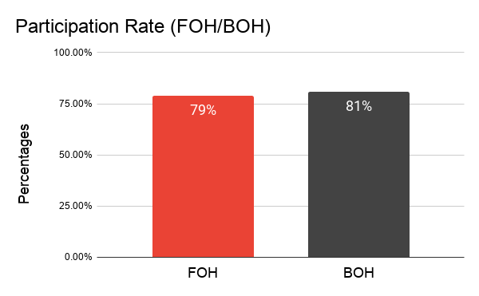Participation rate! I haven't even talked about it yet, but here's the chart. Across the store, 80% particpation rate which is pretty good. I was honestly surprised how close this is between houses.
These two charts are going to show up a couple more times. Take a difference in the dataset, split it along those lines, check to see about tables and items. Voila! Draw your own conclusions.
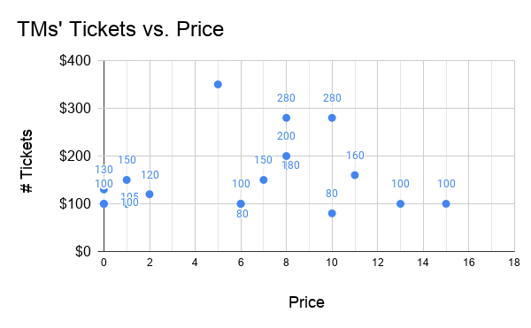 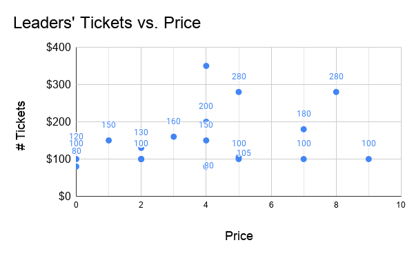I took the TM and Leader datasets separately and checked for any Ticket-Price correlation. TM R-sq = 0.024 and Leader R-sq = 0.094.
Some of these charts/labels are a bit janky, but Google Sheets isn't perfect and I can't be bothered to fix it by hand.
This one does take some explaining. Big thanks to Tari for getting me a list of people who were/are in college, the red bars. From the remaining names I made a list of highschoolers, which are the yellow bars. The remaining "Other" category includes everyone who isn't on either list. This isn't as accurate as if I sat down and asked everybody what their exact status of post-college/college age/college part time/whatever is, but it's close enough and at least lets us make some inferences about the highschoolers.
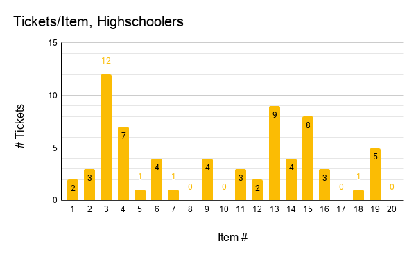 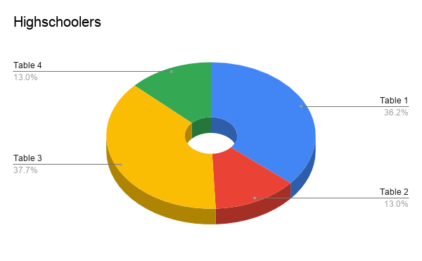The first chart is of the items distribution, which I think allows for some interesting stats. The second is a donut displaying the spread of tables for highschoolers.
Major thanks of course to Tari who provided all the additional information I needed. Thanks as well to Clay for moral support while I was counting the tickets on the 23rd. Mad shoutouts to my mom for proofreading this too. All errors are mine, prboably.